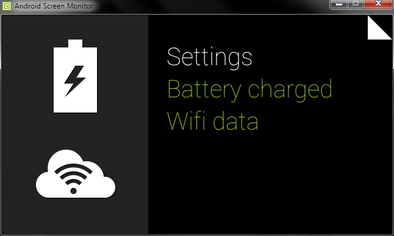
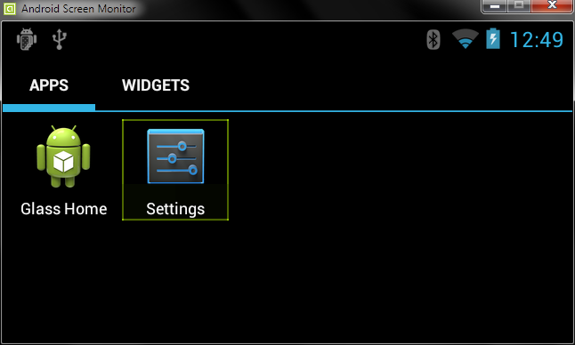

Suppose you got your hand on those first ever manufactured Google Glass Product, and being a enthusiastic sportler you also own a Polar Bluetooth Heart Rate Monitor (it's the only device we can openly decode raw datas).
Would that be great to see your heart rate beeps on your Glass while you're running?! ;)In this page I will introduce you to the ability of intergrate myHealthAssistant project into Google Glass, explore some very promissing feature, that isn't sharpen for now: bluetooth communication with healthcare monitoring device. For a while now, the major of healthcare sensor monitors only focus on smartphones and computer to communicate with over bluetooth. But any device that has bluetooth can also do that, and Glass is one of them. Goal of this Page is allowing Glass to read pulse sensor. Warning: this tutorial's only for Geeks, follow it if you consider yourself one!
Software Requirements
Because in default Google Glass doesn't allow to run the kind of android app normaly runs on smartphone, we'll need a few things to tweak it:- ADB Tools: Android Debug Bridge helps communicating with Android Device from Command Line tool. It comes within Android SDK tools kit. If you installed ADT Bundle on computer before then no need to care for it.
- Enable Debug mode in Glass: In order to deploy and debug apps running on Glass, you must first enable debug mode on Glass as follow:
-> Go to Settings-> Navigate to DeviceInfo-> Tap to enable Debug

- Android Screen Monitor: Android Screen Monitor (ASM) is a tool to monitor screen on the device or emulator (because seeing through the tiny little screen of Glass is sometimes frustrating!). After downloading, open command line, locate to the folder and run by typing:
java -jar asm.jar -
Launcher2 and Settings apk: Launcher2 allows most native android apps to run on Glass without affecting general usability of Glass too much. Settings apk is used to change settings and bluetooth activity. To install navigate to the downloaded place and on command line type:
For more infos go here. After success, the launcher and settings can be navigate from Glass settings like below:adb install 'apk-name'


-
Pairing with Sensors: By now Glass can act like an android phone, so all other steps are just like before
Open Settings -> Bluetooth -> Device SearchingWhen prompt to input pin, using adb from command line:
adb shell input text '1234'(Vary from sensor to sensor)Paired Sensor:

-
Install myHealthHub on Glass is the same as deploy it on phone. You can use Eclipse as before to do so.


Run myHealthHub on Glass
As you can see, we have archived to read Heart rate sensor data from Glass the same as on your smartphone. It's really interesting to see how in the future something like this can be fully interated into Glass and other wearable devices.
Have fun coding!